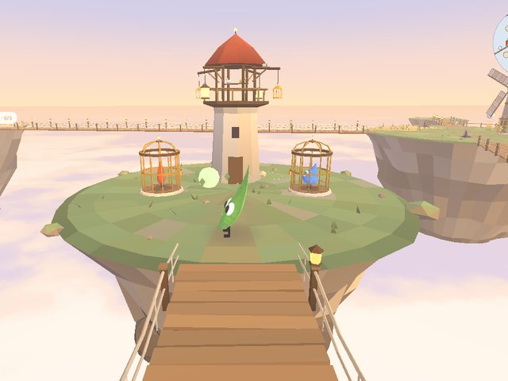
Tier 1
Free a caged friend
Open any cage. Cages are the squares on the radar. Two stand on Heart Isle right below you. One you opened earlier counts.
Light your Spark from three Sun Motes, climb the Sky Spire, and ring the Sky Bell three times before anyone else.
You race two rival elements. A round lasts at most 8 minutes. If nobody has rung three times by then, whoever stands highest on the spire wins.
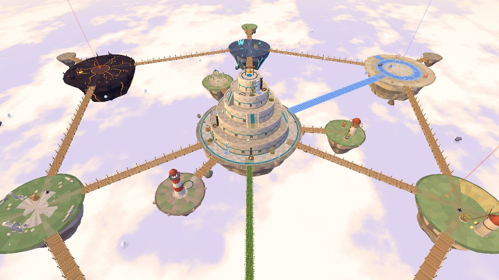
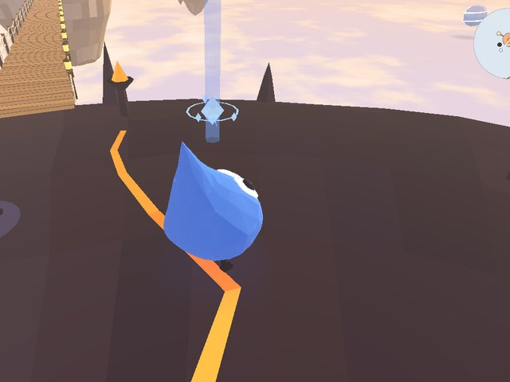
They glow in your colour and show as stars on the radar. One is always on the home isle of the element you can catch. Touch a mote to absorb it. You never lose motes, even if you fall.
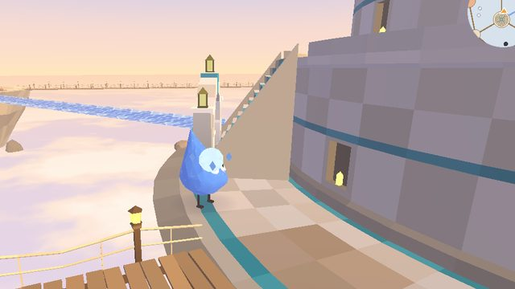
With three motes your Spark lights and the spire door on Heart Isle opens. Five terraces lead up. Each of the first four sets you a task before it lets you higher.
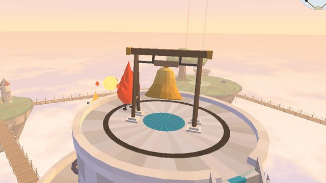
On the top platform, stand in the glowing ring for 2 seconds to ring once. The bell swings for 4 seconds before it can ring again.
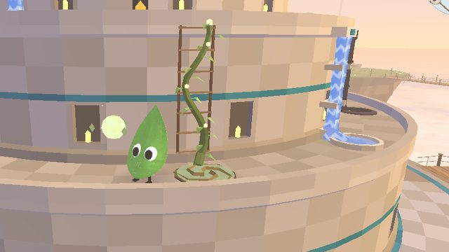
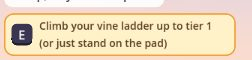
Fire: vent Water: lift Leaf: vine ladder
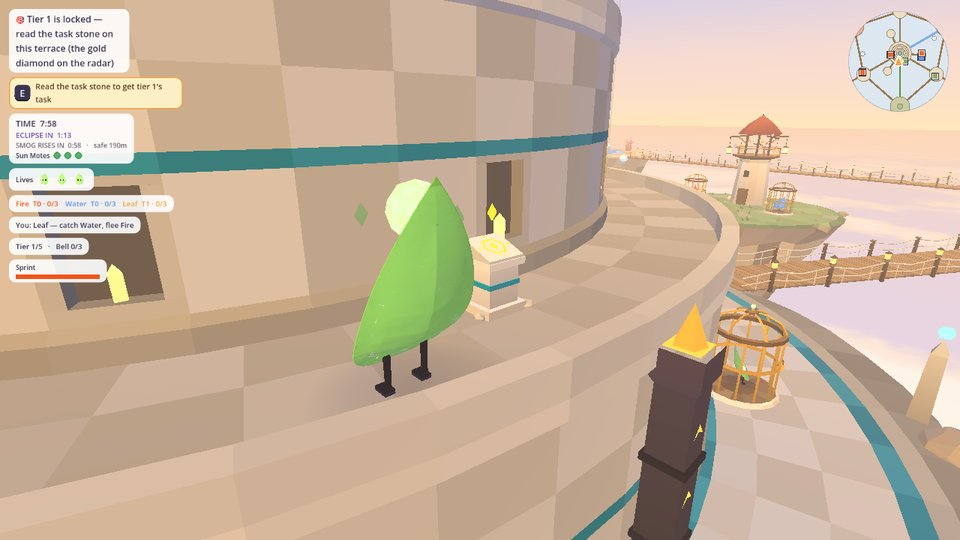

Open any cage. Cages are the squares on the radar. Two stand on Heart Isle right below you. One you opened earlier counts.
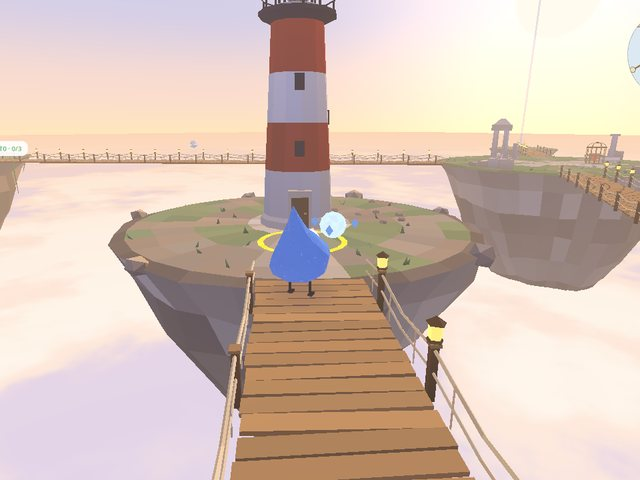
Cross to Beacon Isle and stand in the gold ring at the lighthouse for 3 seconds. Its lamp then burns in your colour.
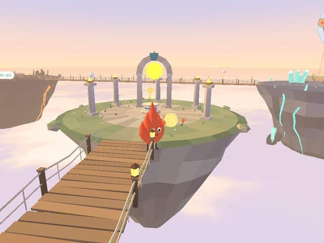
Touch the key on the Sun Shrine's altar, then carry it back up to the tier 3 stone.
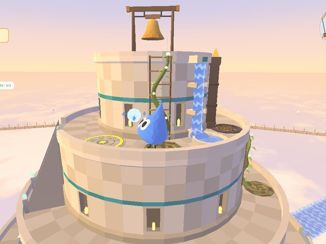
Stand on the seal on that terrace for 6 seconds. A tag from a rival starts the count again.
If the smog sea has already swallowed Beacon Isle, the stone lets you pass. A Sun Key on swallowed ground drifts to safe ground, and the radar follows it.
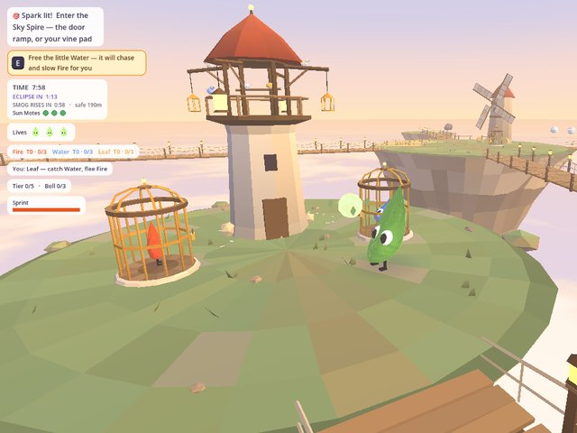
Stand next to a cage and press E. The little one inside joins you. You can have two at a time, and an empty cage refills after 30 seconds.
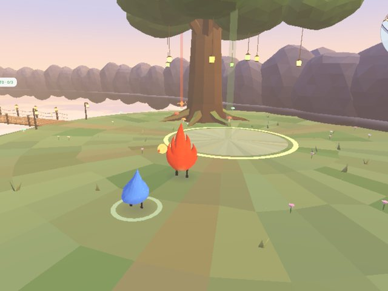
If the little one can eat one of your rivals, it chases that rival, circles it and slows it every few seconds. A Leaf who frees a Water gets a Fire-chaser.
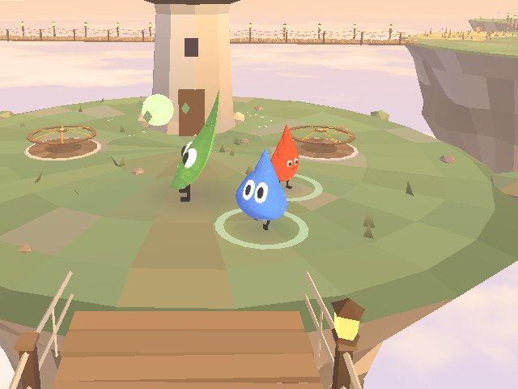
Otherwise it stays at your side and throws itself at dark smog clouds, turning them harmless. It can soak up two. Here the little Fire guards Leaf.
The hint on each cage says which kind you will get. A helper leaves after 90 seconds. A rival that eats its element can send it home with a touch, and you can do the same to theirs. Hunters cannot follow anyone above tier 2.
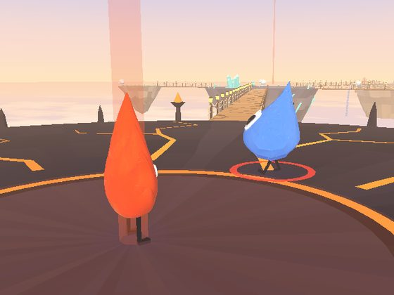
A red ring under a rival means it can catch you. One touch costs a heart and shoves you 6 metres. On the spire it knocks you down a tier instead. A green ring means you can catch it.
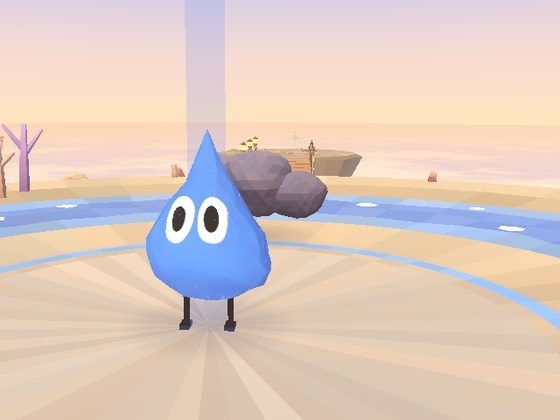
They drift over the gaps and chase you. A touch costs a heart, then the cloud turns pale and harmless for a while. They are slower than you and never climb above tier 2.
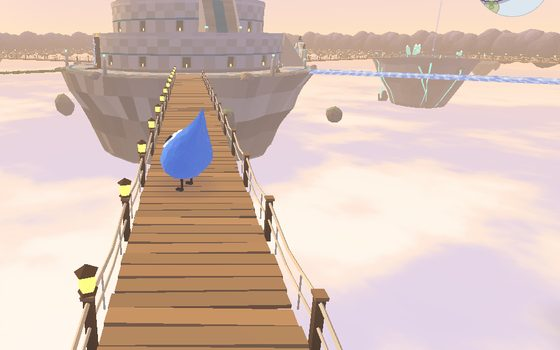
Walk or get shoved off an isle or a bridge and you fall through the clouds. You come back at home after 3 seconds, with your motes.
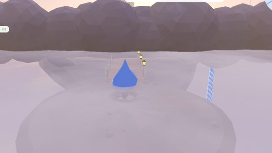
Every minute it swallows another ring of the map, from the outside in. Ground inside it slows you and costs a heart every 2 seconds. The radar shows the line.
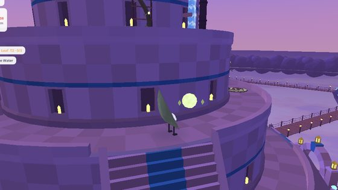
Every 75 seconds the chain reverses for 15 seconds. Your prey can catch you and you can catch your hunter. The countdown is always on screen.
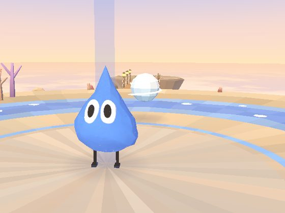
These are good. Touch one to boost your sprint. They are harmless unless you are disguised by a Meteor Shard.
| You are | You catch | You flee | Your raid mote is on | Your own way to Heart Isle |
|---|---|---|---|---|
| Fire | Leaf | Water | Canopy Grove | Stand on the thermal vent at Ember Crag and it flings you across. |
| Water | Fire | Leaf | Ember Crag | Surf the sky stream from Tide Atoll at double speed. |
| Leaf | Water | Fire | Tide Atoll | Walk the vine from Canopy Grove. Only Leaf can walk it. |
Everyone can also reach Heart Isle over the plank bridges from the three wild isles. Your home sanctum is safe from rivals and smog clouds for 30 seconds at a time.
W A S D move Shift sprint E or Space climb your shortcut E read a task stone E open a cage drag the mouse to look around
You have 3 hearts. At zero you go home with full hearts and keep your Spark.